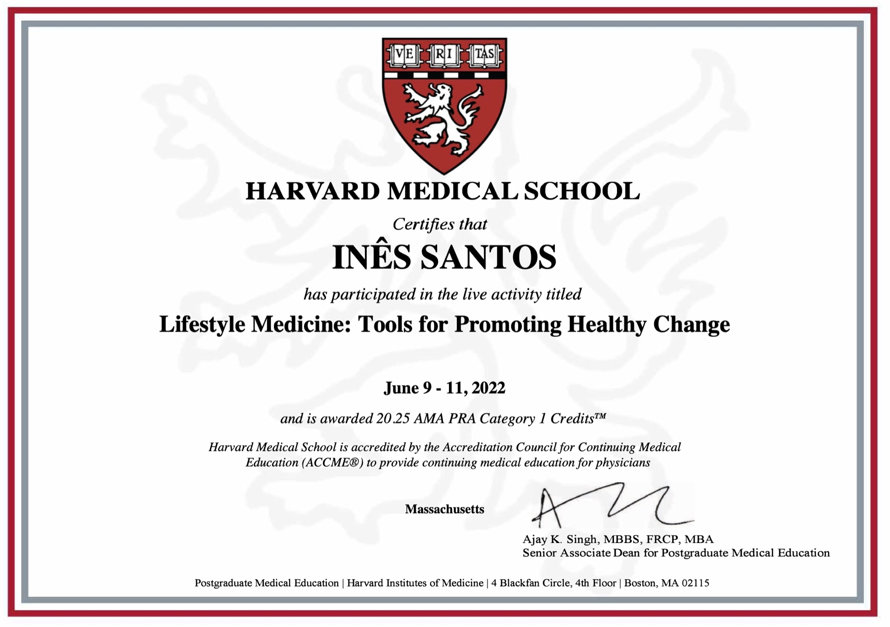
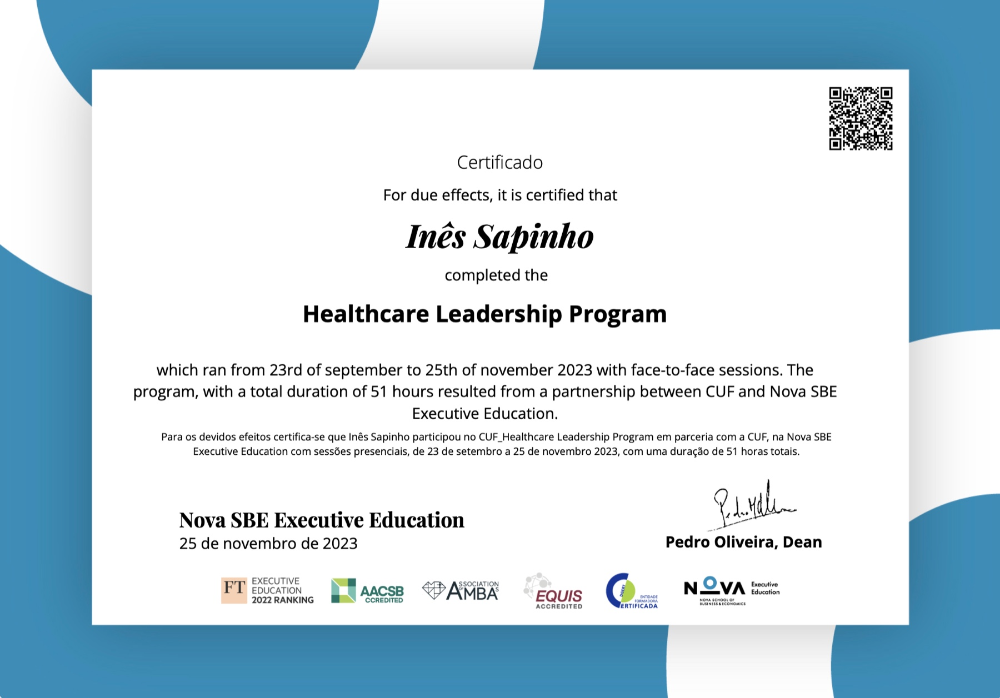
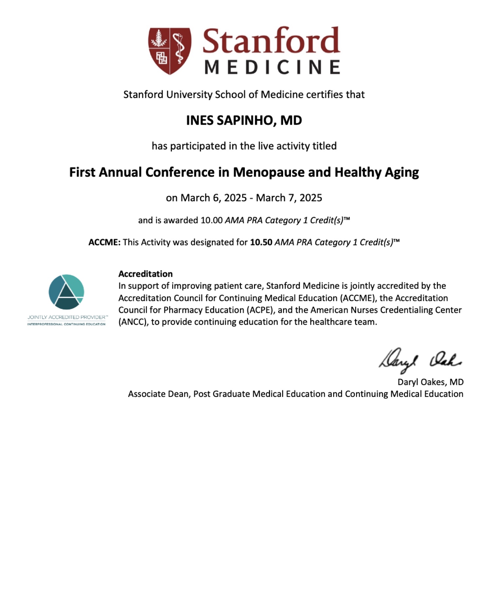

Licenciatura em Medicina
Faculdade de Ciências Médicas da Universidade Nova de Lisboa
Congressos e Eventos
Percurso académico, formação complementar, sociedades científicas e certificados relevantes.
Percurso
Faculdade de Ciências Médicas da Universidade Nova de Lisboa
Hospital de Egas Moniz
Hospital Fernando da Fonseca
Ordem dos Médicos / Universidade Católica
Hospital CUF Descobertas
Faculdade de Ciências Médicas da Universidade Nova de Lisboa, no Hospital CUF Descobertas
Hospital Fernando da Fonseca
Datas, cargos atuais e formulações finais devem ser confirmados com a médica antes da publicação.
Certificados

Formação médica contínua · 20.25 AMA PRA Category 1 Credits

Programa presencial · 51 horas

Formação médica contínua · Menopausa e envelhecimento saudável
Sociedades científicas